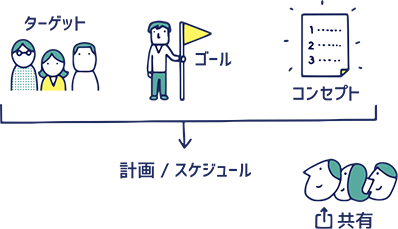
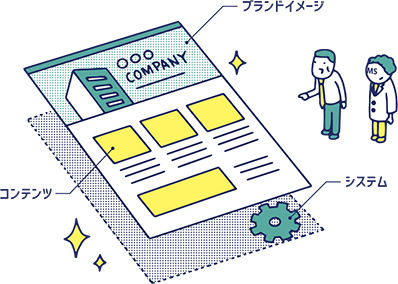
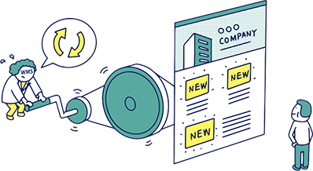

サービスService
- HOME
- サービス-Service
コンサルティング
買いたい、行きたい、もっと知りたい。そんな気持ちを訪問者に引き起こすこと。それが経営戦略の中でWebサイトが負う役割です。そんなWebサイトの実現のためには、ターゲットを理解し、ゴールを設定し、コンセプトを明確化することが大切。また、主要なコンテンツを企画し、ゴールまでの導線を検討し、全体像を関係者で共有しましょう。

戦略の作成とWebサイトの役割
Webサイトを有効活用し、ビジネスの成果を上げる戦略を作ります。ターゲット（誰に働きかけるのか）とゴール（何をもって成功とするか）を設定し、コンセプトを明確にします。ゴールは営業活動の中にあるとは限りません。業務をＩＴ化してコスト削減を狙う場合もあります。
この戦略コンセプトが、以降のプロセスでブレないことが大切です。
コンテンツ等の企画設計
現実の制約の中で、戦略を実行し成果を上げるためのコンテンツをご提案します。クライアントの業種・業態で考えられるもの、現実の状況で運用可能なものを組み立て、最大限に効果を引き出すように企画します。
他に、メルマガで定期的に情報を送り優良顧客に育てる、キャラクターを使用してブランドの認知を向上させる、といったことも考えます。
運用設計
常に目的を意識しながら、継続的な改善（いわゆる”PDCA”）が進むよう、運営体制、ルールを設計します。更新作業を定型と非定型に分類し、効率と品質、スピードとコストのバランスを考慮して、ツールの効果的な適用方法を検討します。
同じ運用を行う場合にも、既にお持ちのサーバ環境や、担当者様のスキルレベルによっても適切なシステムや運用体制が異なります。
構築
Webサイトの訪問者にどういうイメージを残せるか。そのイメージと自社の強みや魅力が一致したときに、Webサイトは威力を発揮します。創りたいブランドイメージを意識し、取材などで集めた文章や写真を整理・編集して、魅力的なWebサイトとして組み立てます。また、訪問者に利便性を提供するシステムを設計・開発します。

ビジュアルデザイン
訪問者にどのように認知されたいか。自社の強みや魅力をブランドイメージとして表現することは、Webサイトの大切な役割です。通信速度の向上が著しい昨今は、第一印象を決める大きなイメージ写真の選定が重要です。
同時に、デザインはWebサイトの使い勝手も左右します。これらを同時に、あるいは、相乗効果を発揮するよう、ビジュアルデザイン、レイアウト、インタフェースを作ります。訪問者が欲しい情報を直感的に見つけられる分かりやすいナビゲーション、概要説明やメニュー名称の言葉選びも大切です。
コンテンツ制作
文章や写真など掲載可能なコンテンツの素材を取材して集めたり、クライアントにご提供いただき、内容や位置づけを理解してWebサイトとして構造化します。訪問者がスムーズに理解するための順番、興味を持てるコンテンツに組み立てるのです。
また、文章のリライトや写真のトリミングなど細部の加工を行い、素材から成果物としてのWebサイトへ作り上げます。SEOに対応したコーディング、公開後の運用にも配慮したディレクトリやファイル構成、CMSツールの開発導入等も重要です。
システム開発
効果の高いWebサイトにするには、コンテンツだけでなく、双方向性や顧客別対応といった機能が必須です。私たちは、基本的なシステムインフラとしてのWebサーバ立ち上げや暗号化通信（いわゆる”SSL”）、お問い合わせフォーム、コンテンツ管理システム（CMS）のほか、スパムメール対策としてメールアドレスを表記せずに済ませるメール代替フォーム機能、会員管理と連動したマイページやメール配信機能、アクセス分析やマーケット分析ツールなど、さまざまなシステム開発やWebサービス導入で応えます。
運用
Webサイトが成果を上げるのは運用段階です。鮮度と品質を維持し、継続的な改善を進めていくために、エネルギーを使い続けて取り組むことが大切です。CMSを利用したスピーディーな更新、定期的なコンテンツの充実や特集企画の追加、訪問者のWebサイト閲覧状況を分析してのサイトの改善。これらに取り組んで、より成果を大きくしていきましょう。

更新ツール（CMS）の提供
クライアント自身で定型的なコンテンツの更新ができるツール（CMS）を提供します。全体の約8割を占める定型的なページの更新作業を、クライアントご自身で行うことができます。CMSの開発や導入作業だけでなく、基本的な考え方、管理画面と編集画面の役割、編集画面の操作方法をご理解いただくための研修や支援も行います。テスト公開から責任者の承認を経ての本番公開までの流れなど、お客様ごとに異なる状況を組み込んで対応いたします。
非定型な更新作業を担当
キャンペーンの告知など積極的にアピールたいページ、デザインやレイアウトをひとつひとつ丁寧に制作したいページ、新規企画に伴うメニューの改修などWebサイトの構造に影響する更新。こういった非定型の作業は、スピードやコストよりも品質や成果が大切です。こういった非定型の更新作業は、私たちプロにお任せください。クライアントの目的はもちろん、ディレクトリやファイル構造、メニュー構造の健全性など、品質を維持した更新を行います。
パワーアップの提案
コンテンツが充実してくると、メニュー構造に無理が生じることがあります。ネット環境の変化（常時接続化や通信速度向上）、閲覧環境の改善（モニターの大型化）、新しいデバイスの登場（スマホ）により、デザインの主流が大きく変化すると、変化前のWebサイトがとても古く見えることがあります。そういった場合に、リニューアルなどのご提案をいたします。お客様の声や閲覧状況を分析し、新しいニーズを理解して、パワーアップのための新たな企画・設計を行いましょう。